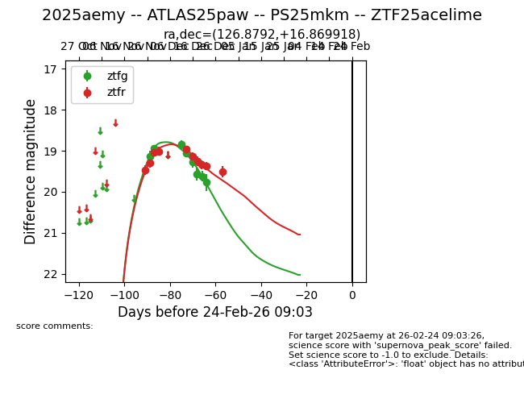
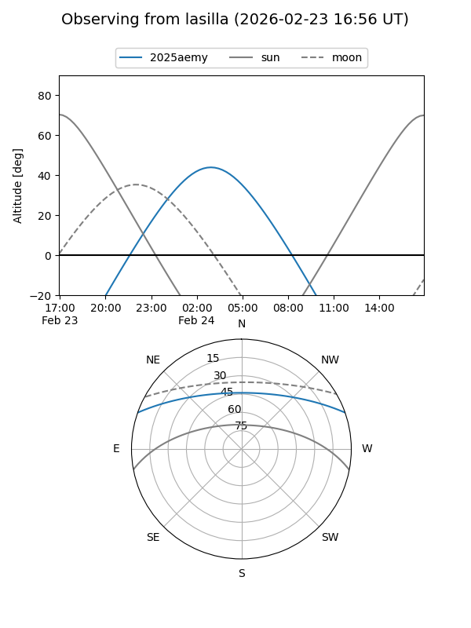
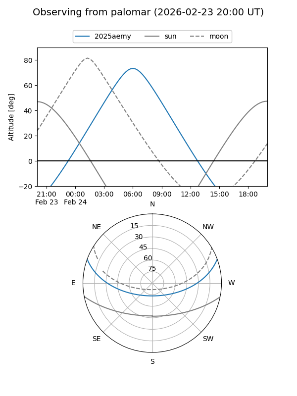

2025aemy
Target 2025aemy at 2026-01-09 12:49
Aliases and brokers:
FINK: link
Lasair: link
ALeRCE: link
TNS: link
YSE: link
alt names
ZTF25acelime (ztf,fink_ztf)
2025aemy (tns,yse)
ATLAS25paw (atlas)
PS25mkm (panstarrs)
Coordinates:
equatorial (ra, dec) = 126.8792,+16.86992
equatorial (HMS+DMS) = 08:27:31.01,+16:52:11.70
galactic (l, b) = (207.6602,+28.62059)
Flags:
Photometry:
last ztfg=19.77, ztfr=19.52
8 ztfg, 10 ztfr detections
Lightcurve

Visibility


Additional plots